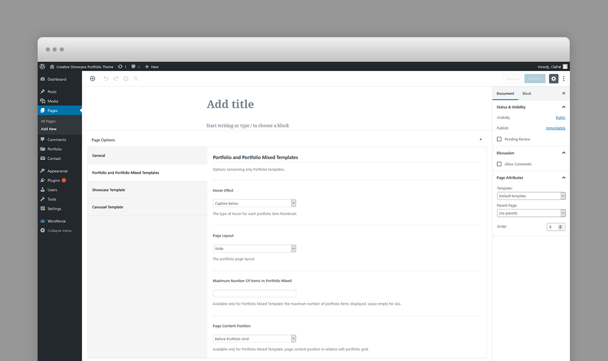
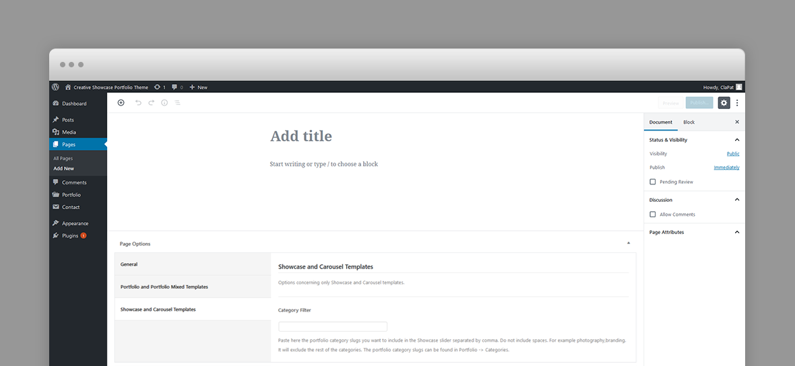
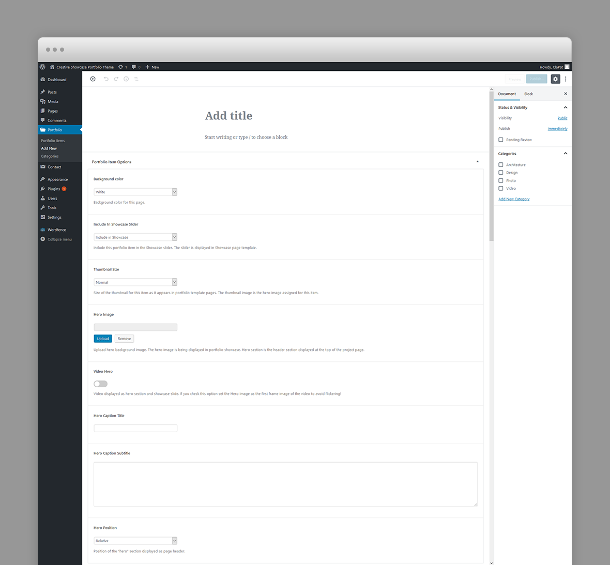
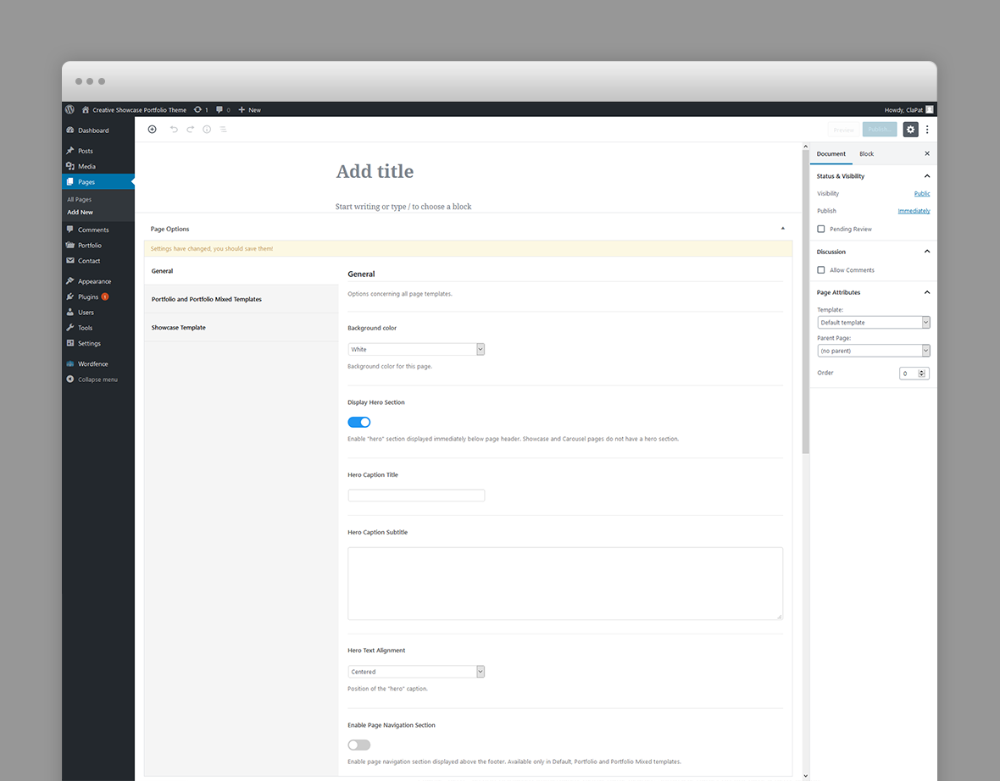
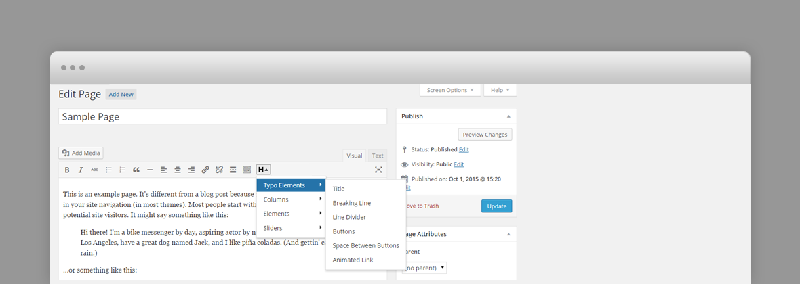

Page Templates
Hervin categorizes pages depending on their settings and templates. These page templates are:
- Default - This is the default template. The layout of a default page includes a hero section followed by page content and the footer panel.
- Blog - A page containing all blog posts. Apart from the page options, additional settings about this template can be found in Customizer » Blog Options
- Showcase - This page template displays all the Hervin portfolio items using the fullscreen showcase slider. Apart from the page options concerning this template, additional settings about this template can be found in Customizer » Portfolio Options
- Carousel - This page template displays all the Hervin portfolio items using a large carousel slider. Apart from the page options concerning this template, additional settings about this template can be found in Customizer » Portfolio Options
- Portfolio and Portfolio Mixed - This page template displays all the Hervin portfolio items using the masonry grid. Apart from the page options concerning this template, additional settings about this template can be found in Customizer » Portfolio Options
Page Options
Page options are divided into three groups: all page templates (General), Portfolio and Portfolio Mixed template(s), Showcase and Carousel template(s)
General Options

- Background Color – The background color of this page. It can be White (with dark content) or Black (with light content). The logo version (light or dark) will be selected automatically depending on this setting.
- Display Hero Section – A hero is the header section of the page displaying html content. For Hero settings please refer to Hero Section.
- Enable/Disable Page Navigation – Enable page navigation section displayed above the footer. Available only in Default, Portfolio and Portfolio Mixed templates.
- Page Navigation Caption – Caption displayed above the next page title.
- Page Navigation Next Page Url – The url of the next page in navigation.
- Page Navigation Next Page Title – The title of the next page in navigation. For an optimal transition between pages this field is the next page hero title or next page title (if hero is disabled). Enter just plain text, not HTML, each character will be wrapped in a element.
- Page Navigation Next Page Subtitle – The subtitle of the next page in navigation. For an optimal transition between pages this field is the next page hero subtitle (if hero is enabled).
Portfolio Options
- Hover Effect –The type of hover for each portfolio item thumbnail.
- Page Layout – Portfolio page layout.
- Maximum Number Of Items In Portfolio Mixed – Available only for Portfolio Mixed Template: the maximum number of portfolio items displayed. Leave empty for ALL.
- Page Content Position – Available only for Portfolio Mixed Template: page content position in relation with portfolio grid.
Showcase Template Options
- Category Filter – Paste here the portfolio category slugs you want to include in the Showcase slider separated by comma. Do not include spaces. For example photography,branding. It will exclude the rest of the categories. The portfolio category slugs can be found in Portfolio -> Categories.
Portfolio Post Options
Every portfolio item will be included in the Showcase or Carousel page templates as long as they have a Hero image, so, ideally, each item will have a Hero image. The hero image will be displayed as the showcase slide and at the top of the individual project page.
- Background Color – The background color of this project page. It can be White (with dark content) or Black (with light content). The logo version (light or dark) will be selected automatically depending on this setting.
- Include In Showcase Slider – Include this portfolio item in the Showcase slider. The slider is displayed in Showcase page template.
- Hero Image – Upload hero background image. The hero image is being displayed in portfolio showcase. Hero section is the header section displayed at the top of the project page.
- Video Hero – Video displayed as hero section and showcase slide. If you check this option set the Hero Image as the first frame image of the video to avoid flickering!
- Webm Video Url – URL of the showcase slide background webm video. Webm format is previewed in Chrome and Firefox.
- Mp4 Video Url – URL of the showcase slide background MP4 video. MP4 format is previewed in IE, Safari and other browsers.
- Hero Caption Title – Caption title displayed over hero section. The hero background image is set in the hero image set in preceding option.
- Hero Caption Subtitle – Caption subtitle displayed over hero section. Enter plain text.
- Scroll Down Caption – Scroll down caption displayed to the left of the hero image indicating scrolling down to reveal the content. Leave empty for no scroll down button.
- Hero Project Info – Short text describing the project to the bottom right of the hero image. Usually the year when the project has been accomplished.
- Hero Position – Position of the "hero" section displayed as page header. Fixed or Parallax.
Blog Post Options
The featured image of a post is displayed in the blog page as post thumbnail.
- Background Color – The background color of this blog post page. It can be White (with dark content) or Black (with light content). The logo version (light or dark) will be selected automatically depending on this setting.
Default Page Hero Section
A hero is the header section of a page, post or portfolio item page displaying html content.
You can add any overlaying html content using Hero Title and Subtitle fields. For a blog post the caption is the post title and its categories.
If there is no hero section, disable it in the page options.
Hero Options
The hero section options varies depending on the post type (page, blog post or portfolio item) however each hero section can have the following options:
- Hero Caption Title – Caption title displayed over hero section.
- Hero Caption Subtitle – Caption subtitle displayed over hero section. HTML code allowed in this field.
For portfolio items you can define video hero section, in which case the corresponding showcase slide will display the video as well:
- Video Hero – Video displayed as hero section and showcase slide. If you check this option set the Hero Image as the first frame image of the video to avoid flickering!
- Webm Video Url – URL of the showcase slide background webm video. Webm format is previewed in Chrome and Firefox.
- Mp4 Video Url – URL of the showcase slide background MP4 video. MP4 format is previewed in IE, Safari and other browsers.
Predefined CSS classes used in our live demo and available in the theme
Several classes have been defined in order to properly align and display Hervin Gutenberg blocks and WPBakery Page builder rows. You can specify them as Additional CSS Class in Gutenberg or Extra class name in row's options in WPBakery. They are as follow:
- row_padding_all – padding space on all sides (8vw).
- row_padding_top – top padding space to the row (8vw).
- row_padding_bottom – bottom padding space to the row (8vw).
- row_padding_left – left padding space to the row (8vw).
- row_padding_right – right padding space to the row (8vw).
- small – small row width.
- full – makes the row full width.
- text-align-center – center aligns the text within the row.
- has-animation – adds an animation effect
- has-mask – Use only for Headings for letters fade in effect
- has-parallax – adds a parallax effect to all the images inheriting this class.
- one_half – First 1/2 Column
- one_half last – Last 1/2 Column
- one_third – 1/3 Columns
- two_third last – 2/3 Column
Note to the WPBakery users: WPBakery row's properties and some of the elements are not compatible with AJAX loading. It is recommended to use our shortcodes, predefined classes or create your own CSS classes in appearance -> customizer -> additional CSS and add them to Extra class name attribute of the current row. This works great with AJAX loading. More workarounds for WPBakery and loading pages with AJAX: Here
Shortcodes
Hervin comes pre-packed with a number of shortcodes allowing you to add styled content to your site with little effort. Hervin is tightly integrated with Gutenberg editor, therefore you will see them when adding a new block. Hervin blocks appear under Layout Elements section
Hervin is also tightly integrated with WPBakery Page Builder editor, therefore you will see them when adding a new element.

The shortcodes are grouped in several categories:
- Typo Elements – Title, Button, Space Between Buttons
- Elements – Accordion, Contact Info Box, Map, Image Collage, Popup Image, Video Hosted, Icon Service, Testimonials, Clients
- Sliders - Normal Image Slider, Carousel Image Slider
If you choose not to disable Gutenberg or WpBakery Page Builder, conveniently, the available shortcodes have been included in a menu and shortcode editor. When creating a page or post, click the black H icon in the tinymce editor to reveal a list of shortcodes
{kind=link}
WPML Compatible
Translating theme options
Follow the WPML configuration file shipped with the theme to see which options are translatable and which are not. You can add or change the properties of the fields. The theme options can be found in /include/admin-config.php. The metabox options can be found in /include/metabox-config.php
Theme Translation
Hervin is fully localized and it has included the generated PO (Portable Object) in /languages folder. It contains translatable strings used by the theme.
Please visit the following links to learn more about translating WordPress themes: